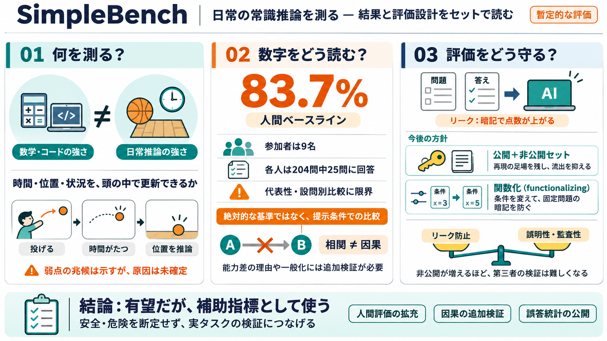

SimpleBench
on SimpleBench, a non-specialized human baseline is 83.7%, based on our small sample of nine participants, ~~outperformi…

参加者の個人差・選好バイアスが平均に直撃
LLMと人間の“差”の意味付けが揺れる
一部の問題で再現・検証の足場を作る
残りは監査しづらいが、リーク耐性を上げる
公開を絞るほど効果が上がる
非公開が多いほど理解・検証が難しくなる
on SimpleBench, a non-specialized human baseline is 83.7%, based on our small sample of nine participants, ~~outperformi…
> You are an expert at reasoning and you always pick the most realistic answer. Output your final answer using the follo…
## Introduction Introducing LiveBench: a benchmark for LLMs designed with test set contamination and objective evaluati…
### Simple Bench Well, let me answer my own two questions in reverse order. First, how should we quantify the magnitude…
LiveBench 2.0-Abacus AI Leaderboard InsightsMethodologyPaperLiveBench 1.0 LiveBench 2.0 # A challenging, contaminatio…